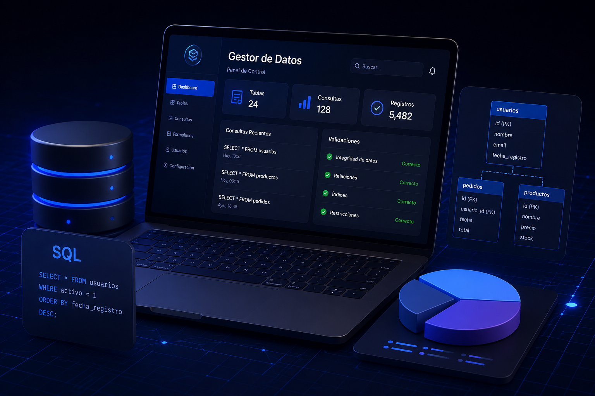

Disponible para prácticas, proyectos y aprendizaje continuo
Yeray
Jurado
Desarrollador Full Stack en formación, actualmente estudiando Desarrollo de Aplicaciones Web. Me interesa crear aplicaciones limpias, funcionales y bien estructuradas, combinando frontend, backend y bases de datos. Busco seguir creciendo como desarrollador y aportar soluciones web útiles, modernas y profesionales.
Disponible para prácticas
Full Stack Developer
DAW · 1º año
Frontend
Backend
Bases de datos
Objetivo actual
Contactar
Seguir mejorando como desarrollador web construyendo proyectos reales.
Stack técnico
Tecnologías con las que estoy construyendo.
Mi stack está orientado al desarrollo web completo: interfaces claras, lógica de servidor, bases de datos relacionales y control de versiones para trabajar de forma ordenada.
Frontend
Desarrollo de interfaces web responsive, limpias y con buena experiencia de usuario.
HTML
CSS
JavaScript
Angular
Backend
Construcción de lógica de negocio, APIs y aplicaciones estructuradas con Java y Spring.
Java
Spring
APIs
BBDD y herramientas
Gestión de datos, consultas SQL y control del código con herramientas esenciales de desarrollo.
SQL
MySQL
Git
Proyectos
Proyectos en desarrollo y aprendizaje continuo.
Esta sección reúne proyectos propios, prácticas y trabajos de clase orientados al desarrollo web. El objetivo es mostrar mi evolución como desarrollador Full Stack y las tecnologías que voy aplicando en cada proyecto.

Sobre mí
Aprendiendo a crear soluciones web de principio a fin.
Soy Yeray Jurado, desarrollador Full Stack en formación con base técnica en sistemas microinformáticos y redes. Actualmente estudio Desarrollo de Aplicaciones Web, donde estoy reforzando mis conocimientos en programación, bases de datos, diseño web y desarrollo backend.
Me gusta trabajar con código ordenado, entender bien cómo funcionan las aplicaciones y seguir mejorando en tecnologías como Java, Spring, Angular y MySQL. Mi objetivo es crecer profesionalmente dentro del desarrollo web y participar en proyectos reales donde pueda aportar y aprender.
Perfil técnico
Base en sistemas, redes y desarrollo web.
Mentalidad
Constancia, aprendizaje y mejora continua.
Objetivo
Convertirme en desarrollador Full Stack profesional.
Experiencia
Prácticas de desarrollo web en NTT DATA.
Formación y experiencia
Mi recorrido técnico hasta ahora.
Una trayectoria centrada en tecnología, sistemas y desarrollo web, combinando formación profesional con experiencia real en empresa.
Prácticas de desarrollador web · NTT DATA
Experiencia práctica en entorno profesional, acercándome al flujo real de trabajo en desarrollo web, organización de tareas y buenas prácticas dentro de un equipo técnico.
Desarrollo de Aplicaciones Web · DAW
Primer año del Ciclo Formativo de Grado Superior en Desarrollo de Aplicaciones Web en el IES Las Fuentezuelas. Formación orientada a programación, bases de datos, frontend, backend y despliegue de aplicaciones.
Sistemas Microinformáticos y Redes · SMR
Ciclo Formativo de Grado Medio en Sistemas Microinformáticos y Redes en el IES Virgen del Carmen. Base técnica en sistemas, redes, mantenimiento, servicios y fundamentos informáticos.
Contacto
Hablemos de código, prácticas o proyectos.
Estoy abierto a oportunidades para seguir aprendiendo, colaborar en proyectos y ganar experiencia como desarrollador web.
La forma más directa de contactar conmigo para prácticas, oportunidades o proyectos.
CV
Descarga mi currículum actualizado para conocer con más detalle mi formación, experiencia y competencias técnicas.